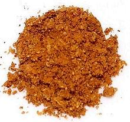

 |
Achar Masala - QuickIndia - Achar Masala | ||||
| Makes: Effort: Sched: DoAhead: |
5 T * 10 min Yes |
Achar Masala is a pickling spice much used in India. This quick version makes enough masala for a recipe such as Achari Chicken. See Achar Masala for a full version. | |||
|
|
4 2 1 1-1/2 1 1/4 1/4 |
T T T t t t |
Kashmiri Chilis (1) Coriander Seed Cumin Seed Fennel Seed Mustard Seed (2) Fenugreek Seed Amchoor powder (4) |
Make: - (10 min)
|